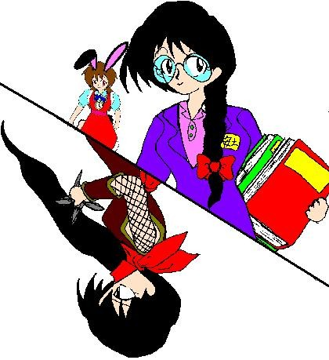

――華代ちゃんシリーズ＆いちごちゃんシリーズＷ外伝――
（ハンターストーリーランド＋α その５）
「バレンタインの□人達」
作：Zyuka
※「華代ちゃん」シリーズの詳細については、以下の公式ページを参照して下さい。
http://www.geocities.co.jp/Playtown/7073/kayo_chan00.html
＊「華代ちゃんシリーズ・番外編」の詳細についてはhttp://www.geocities.co.jp/Playtown/7073/kayo_chan02.html を参照して下さい
※「いちごちゃん」シリーズの詳細については、以下の公式ページを参照して下さい。
http://www.geocities.co.jp/Playtown/7073/Novels-03-KayoChan31-Ichigo00.htm
「……渦巻き？」
「……雀？」
２月１４日…………今日はバレンタインデー、クリスマスなどとおなじく、愛の告白ができる日である。
そして、このハンター組織でも……
「違います！ 銀河さんのはその名のとうり銀河で、紫鶴さんのは鶴です」
「これが？」
ハンター７号こと七瀬銀河と、その妻七瀬紫鶴は、銀河の属する組織の事務員、安土桃香から渡されたチョコレート……黒い板チョコに、ホワイトチョコで描かれた絵柄を眺めながら言った。
「いくつか、質問していい？」
思い余って紫鶴が言う。
「ハイ、なんですか？」
「まず、なんで女の私にまでチョコをくれるの？」
「とりあえず、組織に関係ある人たち、全員分のチョコを作ってきたんです。紫鶴さんのも、ついでに作りました」
（それに……紫鶴さんって、結構嫉妬深いから、銀河さんにだけチョコを渡したりしたらどうなるか……）
桃香はこそっと心の中で付け加えた。
「で、このへたくそな渦巻きはなんなんだ？」
「それは銀河です、今回、私の作ったチョコには、それぞれの方のイメージイラストをつけてみたんです」
「それで私のは雀？」
「鶴です！ まあ、鶴の資料がなかったんで、下手な絵になっちゃいましたけど」
「……千円札の裏は、見てみたのか？」
「………あ………」
桃香は固まった。
「ところで、組織全員に作ってきたってことは……」
桃香の傍らには、巨大なバックがある。
「全部に全部、こんなイメージイラストが描いてあるのか？」
「ハイ！」
「一回見せてくれないか……？」
「それはダメです。とりあえず、皆さんに配ってきま〜す」
そう言って、桃香は大きなバックを持って銀河達のいる部屋から出て行った。
「……なんか不安だな……」
「まあ、大丈夫なんじゃない？ 桃香だってあれが地ってわけじゃないんだし」
「そうだったな……」
☆ ★ ☆ ★ ☆ ★ ☆ ★ ☆ ★
ま、そういう事で、桃香はハンターのエージェントや職員達にイメージイラストの描かれたチョコを配り始めた。
そのイラストは、銀河の予想したとおり、やっぱり常人には理解できない物だった。
一部を紹介しておこう。
☆ ボス＋秘書のケース ☆
「髭……」
「ですね……」
彼らに渡されたチョコには、そうとしか取れない絵柄が描かれていた。
「だって、お二人にはそういうイメージがあるでしょ？」
「いや別に、髭は生えてないぞ」
「だってまだお二人のイラストがないんだもん。もしかしたら生えてるかもしれないじゃん」
じゃん、といわれても…………
☆ 藤美珊瑚のケース ☆
ダイレクトに珊瑚の絵！！
「まあ、予想してしかるべきだったのでしょうけど……」
珊瑚の絵……それはどう見てもひび割れにしか見えなかった……
☆ 水野さんと沢田さんのケース ☆
「……これって、何？」
「マーシャルハーツテストでもやれっていうの？」
水野さん達に渡されたチョコは、一番理解不可能だった。
（こういう時の先輩方のイメージって設定されてないんだよね。下の名前も不明だし。だから最初のほうに作った練習用のチョコを渡しちゃった）
こらこら！！
☆ ハンターガイストのケース ☆
「ガイストさんはハンターの秘密警察だから、こういうのを描いてみました！」
そこには、つながり眉毛＆角刈り＆四角い顔の巡査長の絵柄が描かれていた。
某公園前派出所のお巡りさんのつもりなのだろう。
やっぱり理解するのには時間がかかったが……
☆ 浅葱千景のケース ☆
「これは、一体なんだ……？」
そこには、絶対誰にも理解できないであろう絵柄が描かれていた。
一見すると幾何学模様。角度によっては拳銃にも見えないこともない。
「千景ちゃんは探偵だからね。探偵の大好物を描いてみたんだよ」
「…………探偵の好物？」
「探偵の大好物、つまり“謎”だよ！」
「…………」
それはまさに謎であった……
☆ 半田葉子のケース ☆
「ううーん……」
とある高校の一室……その一番後ろの席で、葉子は惰眠をむさぼっていた。と、突然！！
ダン！！
「えっ！？」
頭上に鋭い音が響く。矢だ。
葉子の頭上の壁に、一本の矢が突き刺さっていたのだ。
「よっこ？ どうしたの！？」
葉子の友人のひとみが驚いて彼女を見る。
ポロ……
その矢には小さな籠がついていて、その中には……
「チョ、チョコレート？」
そこには、眉を吊り上げたおじさんの顔がかかれていた。
頑固おやじのつもりなのだろう。
『同じ情報処理班の出身者として……４号さんへ』
………まだまだ謎の多い女………
☆ 半田双葉のケース ☆
「チョコレートケーキを作ってみたの。味見してくれる？」
女である双葉は、もらう側ではなくあげる側。
できるだけたくさんの人達にあげるべく、調理室にてチョコレートケーキを製作中♪
そんな彼女に渡すチョコレートにかかれたイラストは……無骨なロボットだった。
「なんで！？」
「２８号さんにはその名前の通りの物を差し上げようと思いまして！」
「それがなんでロボットなの？」
「○人28号！！」
桃香…君は一体いくつなんだ？
☆ ★ ☆ ★ ☆ ★ ☆ ★ ☆ ★
ここで、場面は変わる。
「いっちご〜〜〜〜〜！！ チョコをくれ〜〜〜〜〜！！」
「しつこい！！ 俺がそんな物を持ってるわけがないだろ！！」
もはやハンター組織の名物となっている二人。
ハンター１号こと半田いちごと、ハンター５号こと五代秀作……
いちごをこよなく愛する男、秀作がチョコレートを求めている。
まあ、日常の風景に、バレンタインという祭事が加わった風景といえよう。
「くるな、もう！！」
秀作の猛追をからくもかわし、いちごは組織内にある自室に駆け込もうとした。
が、そこには先客がいた。
「あ、安土？ 一体どうして俺の部屋に！？」
自室内に意外な人物がいるのを見て、慌てふためくいちご。
「はい、いちごさん、バレンタインチョコです」
桃香が差し出したのは、苺の絵の描かれたチョコだった。
「あ、５号さんにはこれです」
秀作に渡されたのは、能天気な彼にふさわしい絵柄……太陽だった。
「お、おいしそう！ ありがとう桃香ちゃん！」
秀作は単なる丸のまわりに線を引いただけの絵柄が乗ってるチョコを気にせず食べた。
「じゃあ、次はいよいよ本命といきますか♪」
その時である。
「その本命チョコレイト、拙者に頂きたい……」
「うぇ？」
「誰？」
突然、いちご、秀作、桃香以外の第三者の声がする。
「見つけたでござるよ。安土桃香……」
廊下の隅の暗闇が盛り上がり、人影を形作る。
「………若君！！」
桃香が、いつもと違った緊張した口調で言う……
現れたのは、黒い忍び装束着た青年だった。
「このような場所に逃げ込んだくらいで、拙者から逃れられるとでも思っていたでこざるか？」
「誰、あれ……？」
秀作が、その人物を眺めていう。
「皇 君広（すめらぎ きみひろ）……私の昔いた皇賀忍軍の若君です……」
「忍者の若君……？」
「若君……どうやってここへ……いくら皇賀の人間だって、ここの場所がわかるはずが……」
ハンター組織は秘密組織だ。一般人にはその組織の存在すら隠匿されているはずである。たぶん……
「その男でござる」
君広は秀作を指差して言う。
「え、おいら？」
「何やったんですか！？ ５号さん！？」
「別に……うちの病院に入院してきたのでござるが」
「あ、そういや皇賀本家って、表向きは総合病院だったけ」
ちなみに、君広の表向きの職業も医者だ。
「その時に作ったカルテに、ここの住所が明記されていたのでござる」
秀作の入院は、日常茶飯事……つまりそれだけいちごに返り討ちにあっているというわけだが……
「う〜ん、いらぬ詮索をかけぬため、入院先の病院を変えていたのが仇になったってわけね……」
「なんの騒ぎ？」
「また引き篭もりですか？ 先輩」
なんていいながらやってきたのは、七瀬夫妻……
ほんの少しの時間の間に、１語の自室の前に６人もの人間が集まるという異常事態……
（いいかげんにしろよお前ら）
いちごは、心の中でそう思った。
ちなみに、秀作はいちごの手の中にあるチョコを狙っている。
「おお、銀河殿に紫鶴殿ではないか！ 久しぶりでござるな。……ええっと、お二方の結婚式以来でござるか？」
「久しぶり……」
「何であんたがここにいるの？」
「知り合い？」
「ああ、たしか、どっかの病院の跡取息子だったと思うけど」
「それは世を忍ぶ仮の姿でござる。本当の姿はこの現代に存続する忍軍、皇賀忍軍の時期首領、皇君広でござる」
「あ、そう……」
「何でそんなキャラが出てくるのかしら？」
「まあ、とりあえず、桃香！ そなたの本命チョコレイト、拙者に渡すでござる！！」
「ダメ、これは渡す人をちゃんと決めてるんだもん！！」
忍者と事務員がじゃれあいをはじめる。それを呆然と眺めるいちご、秀作、銀河、紫鶴……
と、
カチャ！
いちごの部屋とは違う、別の部屋のドアが開く。
「一体なんの騒ぎだよぉ……うるさくて寝てらんあによ……」
寝ぼけ眼で現れたのは、見た目うさみみ＆うさしっぽつき女子小学生……
「ああっ♪ りくちゃん♪」
ハンター６号こと半田りくだ。昨日遅くまで華代被害者の救済を行なっていたとかで、今の今まで寝ていたらしい。
桃香はりくの姿を確認すると、すべてを無視して彼女を抱き上げる。
「はい、これがりくちゃん用のチョコだよ！！ もちろん、本命だよ！！」
それはウサギ形にカットされたすばらしいチョコだった。
今までの物と違い、一番時間と手間がかかっている……
「桃香……その子は何でござるか？」
「うん、私の最愛の人♪」
桃香は、今までにない笑顔で言う。
「へっ……」
君広は、一瞬にして凍り付いた。
「な………………なに〜〜〜〜〜！！？」
最愛の人→それは小さな子供→桃香は女性…………
「ま・さ・か……まさか！！ 桃香の娘ぇ……！！」
君広のテンションが一気に上がる……
そして回りを見渡し……一部冷静な部分が、銀河はまあ紫鶴がいるから違うだろうと考え…………やがて、秀作の姿がその目に止まる。
「お主かっ！！ お主が拙者の桃香に手を出したでござるか！？」
「ちがうぅ……」
君広に首をしめられ、落ちる秀作……
「とりあえず、その娘がいなくなれば、桃香は帰ってきてくれるでござるか？」
「へっ？」
シュキュン！！
君広の腕が眼にも止まらぬ速度で動く……何かが投げられたのだ！！
「何をするの！！ 若君！！」
「フェンリル！！」
「ケロベロス！！」
いち早く反応したのは、桃香と、銀河＆紫鶴だ。
キキン！！ ダン！！ ダン！！
桃香はどこからともなく取り出した忍者刀で、銀河はシルバーメタリックのワルサー“フェンリル”、紫鶴も三連銃の一つデリンジャー“ケロベロス１”で、りくに向かって放たれた八方手裏剣を叩き落す！
サクッ……
「あう」
実は、投げられたのは４つの手裏剣だった。
うち、落とされたのは３つ……
一つは、りくに向かわなかったので、無視したのだ。
それは物の見事に秀作に命中した。
「八方手裏剣って、刺さりやすいけどそんなの深い傷は作らないといいます。安心してください、５号先輩」
「でも、毒がぬってある場合があるのよね」
「まあ、病院の跡取なら毒消しくらい持ってるでしょう」
「いちご……手当てして……」
そんなことをいいながら、秀作は落ちた……
「若君……りくちゃんを狙おうとするなんて……どういうつもりですか……！！」
怒りが、桃香の身体を震わせる。
「いや、つい冷静さを欠いてしまったでござる……」
「あたしも、本気を出しますよ……」
いつもの三つ編みがとかれ、眼鏡も外した安土桃香………そこには、いつもの違う彼女がいた。
☆ ★ ☆ ★ ☆ ★ ☆ ★ ☆ ★
「どうなってるんだ……まさか、安土の奴も二重人格なのか？」
りくが、銀河に疑問を投げかける。
「いや、普段が演技で、今のが地なんだろう……」
「……じゃあ、俺にちょっかいをかけてくるのは？」
「それもまあ、地」
☆ ★ ☆ ★ ☆ ★ ☆ ★ ☆ ★
「覚悟してくださいね……若君……」
なぜか服装までいつもの事務員の物ではなく、忍び装束に変わっている。
「……望む所でござる……」
君広も懐から巻物をとりだし……
ここより、忍術大合戦が始まる！！
☆ ★ ☆ ★ ☆ ★ ☆ ★ ☆ ★
「って、まずい！ 紫鶴！！」
「ええ、銀河！！」
桃香と君広……二人の闘気が極限まで膨れ上がる。
それに危険を感じた七瀬夫妻は、お互い手を取り合い……
「ラブラブバリア〜♪」
ポワン♪
銀河と紫鶴の二人を包むようにハート型のバリアが出現する。
ピンク色で、強固で、銀河と紫鶴以外のものをすべて拒絶する愛の防御壁！！
「お、おい！ 何だそれは！？」
あまりに非現実な光景におもわずつっ込みを入れるいちご。
「ラブラブバリアです。ね、紫鶴」
「ええ、銀河……」
だが二人は、こともなげにかわした。
「華代ちゃんみたいな不条理の代名詞がいるこの世界、これくらいのことはできてあたりまえじゃないですか」
「……お前って、そう言うキャラだったのか？」
「それよりも、あなた達は逃げたほうがいいわよ」
「へ？」
☆ ★ ☆ ★ ☆ ★ ☆ ★ ☆ ★
「火遁・桜火扇……満開千本桜！！」
ブオオオオオオオオオオオ！！
桜の花びら……に似た火の粉が所狭しと舞いまくり、あたりを焼き尽くす！！
「水遁・水鏡盾……明鏡止水！！」
バッシャァァァ……キィンッ！！
どこからともなく現れた水が、火の粉を飲み込み凍り付く！！
「木遁・奇樹木種……暗黒樹木！！」
クククククク………
振りまかれた謎の種子が地面につくやいなやありえないスピードで成長する！！
「金遁・金龍図……光裂火炎！！」
ドウンッ！！
金色の龍が吐く炎が、謎の木々を焼き尽くす！！
「土遁・大地球……大激怒！！」
ゴゴゴゴゴゴゴゴゴゴ………！！
突如巻き起こる大地震！！
☆ ★ ☆ ★ ☆ ★ ☆ ★ ☆ ★
「なんか騒がしいな」
「また１号が引き篭もりでもはじめたんじゃないですか？」
のんびりとした会話を交わすボスと秘書。やがてここも天変地異に見舞われる。
☆ ★ ☆ ★ ☆ ★ ☆ ★ ☆ ★
「ええ〜い！！ 皇賀忍法奥義…………煉獄殺傷陣！！」
「そうはいきません！！ 皇賀忍法奥義…………鳳凰開天波！！」
キィィィィィン……シュィィィィィィン！！
「うわああああああ！！」
「どわわわわわわわ！！」
二つの奥義がぶつかりあい、巨大なエネルギーが暴走して……
…………組織本部は崩壊した…………
☆ ★ ☆ ★ ☆ ★ ☆ ★ ☆ ★
「はい、銀河」
「これは？」
それは、ハート型のかわいらしいチョコレートだった。
「私が作ったチョコ……本命であるあなただけにあげる、唯一のチョコ……受け取ってね」
少し間を開けて……銀河はにっこり笑う。
「ありがとう、紫鶴」
「甘い物が苦手だなんていわないで、ちゃんと食べてよね」
「わかっているよ」
銀河はゆっくりと最愛の妻を抱き寄せる。
やがて、二人の唇が近づき……
『そこだけ綺麗に終わらそうとするな！！』
瓦礫の下からボロボロになった組織の人間達が突っ込んだ………
…………ＥＮＤ…………？
☆ ★ ☆ ★ ☆ ★ ☆ ★ ☆ ★
☆ おまけ・皇君広のケース ☆
「昔以上にやりますわね。今でも修行を続けておられるようで……」
「そなたこそ、腕を上げたようでござるな」
お互い、最終奥義を出し合い認め合った二人……そこに友情が芽生え…………てどうする！？
「まあ、いいわ。若君、これを差し上げます。……義理だけどね」
桃香は何も描かれていない、真っ黒な板チョコを君広に渡す。
「これは……なんのチョコレイトでござるか？」
「闇よ。あたし達忍者は闇に生きるのが定めでしょ」
「ふむ、それもそうでござるな」
…………ていうか、あまり物じゃないのか？
＋α

□ 感想はこちらに □